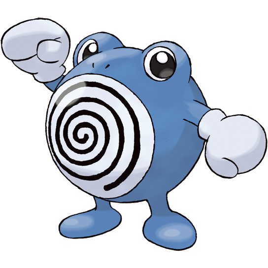

A dedicated healer, Polimend uses its specialized vocal cords to mend the wounds of its allies and itself during battle.
Stage 1

Stage 2
Stage 3
Poliwhirl evolves into Polimend at level 33 while knowing Mended Sound.
No Spawn Location